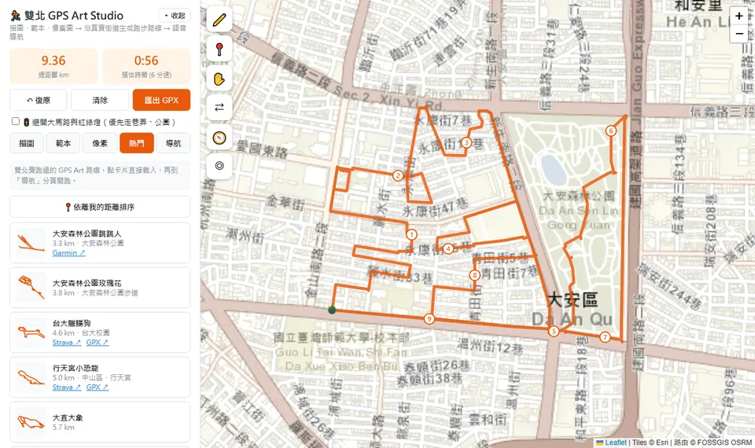

雙北 GPS Art StudioTaipei GPS Art Studio
已上線Live起因：我想用跑步軌跡在地圖上畫圖（GPS Art），但現有工具只能自己一個路口一個路口地點，畫出來不像，跑的時候又容易迷路。
所以我做了這個網頁：選一個圖案，程式會在雙北街道裡找出最像的位置，自動生成跑得出來的路線，跑步時再用中文語音導航。純前端、不需要伺服器，已在雙北實際跑過。
Why: I wanted to draw pictures with my running tracks (GPS Art), but existing tools make you click every junction by hand, the results rarely look right, and the routes are easy to get lost on.
So I built this web app: pick a shape, and it searches Taipei's streets for where that shape fits best, generates a runnable route, then guides you with Chinese voice navigation. Fully client-side, and tested on real runs in Taipei.
開發歷程：遇到的問題與解法How it was built: problems and solutions
-
圖案一貼到街道就變形Shapes distort once snapped to streets
一般的路線規劃只找最短路，會抄捷徑把圖案切掉。我在瀏覽器裡自己寫 A* 路由，成本加上「離圖案多遠」的懲罰，讓路線寧可多繞也要貼著圖案；有眼睛、嘴巴的圖案則每一筆各自描線，再接成一條路線。
Ordinary routing takes shortcuts that cut through the shape. I wrote an in-browser A* router whose cost penalises distance from the shape, so the route detours rather than leaves the outline; shapes with eyes and mouths are traced stroke by stroke and then joined.
-
不知道圖要放在哪裡才像Where should the shape go?
先建一張「每個點離最近街道多遠」的查詢表，快速粗搜位置 × 角度 × 大小，再把最好的幾個候選真的沿街道算出路線，用漏畫、亂繞、尖角三項評分。之後再用網格空間索引加速 1.5 倍、結果完全不變；並把全大台北 132 個地點、33 種圖案掃過一遍，列出各圖案最像的前 3 名。
A lookup table of distance-to-nearest-street lets me coarse-search position × angle × size quickly; the best candidates are then routed for real and scored on missed segments, wandering and lost corners. A grid spatial index later made it 1.5× faster with identical results, and I scanned 132 locations × 33 shapes across Taipei to recommend the top 3 spots for each shape.
-
圖案每條線都要跑，重複路段很多Every line must be run, causing lots of repeats
這其實是圖論的中國郵差問題：把奇數度的路口兩兩配對、補上最短的重複路段，再用 Hierholzer 演算法排成一筆畫。熱門路線最多省下 0.8 km。筆畫之間的連接線也優先走已經畫過的街道，突兀的直線少了約 25%。
This is the Chinese Postman Problem: pair odd-degree junctions, add the shortest repeated segments, then order everything into one stroke with Hierholzer's algorithm, saving up to 0.8 km on popular routes. Connectors between strokes prefer streets already drawn, cutting stray straight lines by about 25%.
-
跑步中導航不可靠Navigation while running was unreliable
GPS 在人行道上飄到對面，就被當成「左轉再右轉」：把這種成對的假轉彎合併，轉彎提示少了約 15%。跑錯路或抄捷徑時，依目前位置和方向重排還沒跑的部分。手機把網頁放到背景會暫停定位：回到前景自動重新定位，每 5 秒存一次進度，分頁被關掉也能接著跑。
GPS drifting across the street looked like “turn left, then right”; merging these fake turn pairs removed about 15% of prompts. After a wrong turn or shortcut, the rest of the route is re-planned from your position and heading. Phones pause web geolocation in the background, so the app restarts tracking on return and saves progress every 5 s to resume even if the tab is killed.
-
沒有後端，又想在別的城市也能用No backend, but usable beyond Taipei
用 Python 從 OpenStreetMap 預先切好雙北和鹿港的步行路網（906 塊、30 MB），放在 GitHub Pages；其他地方即時向 4 台 Overpass 伺服器輪流下載，一台掛了就換下一台。
Python pre-builds walking networks for Taipei and Lukang from OpenStreetMap (906 tiles, 30 MB) served from GitHub Pages; anywhere else is fetched on demand, rotating across four Overpass servers when one fails.
-
研究延伸：怎樣才算「像」？Research spin-off: what makes a route look like something?
另開 city-shapes 實驗：先用街廓面積算重疊率（IoU 0.75–0.93），再訓練 CNN 當評審（Quick, Draw! 24 類、正確率 86%），但數字好、肉眼看卻不像。查文獻後改成「沿線貼合」，分類器認對的比例從 13/24 提高到 15/23，網頁版現在用的就是這個方法。這和我碩論的主動輪廓（讓曲線貼合邊界）是同一類問題。
In city-shapes I first fitted shapes by city-block area (IoU 0.75–0.93) and trained a CNN judge (Quick, Draw!, 24 classes, 86% accuracy), yet results scored well but didn't look right. After reading the literature I switched to line-based fitting, which the classifier recognised more often (15/23 vs 13/24); the web app now uses this method. It's the same family of problem as the active contours in my thesis: fitting a curve to boundaries.